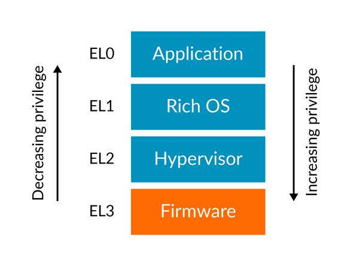
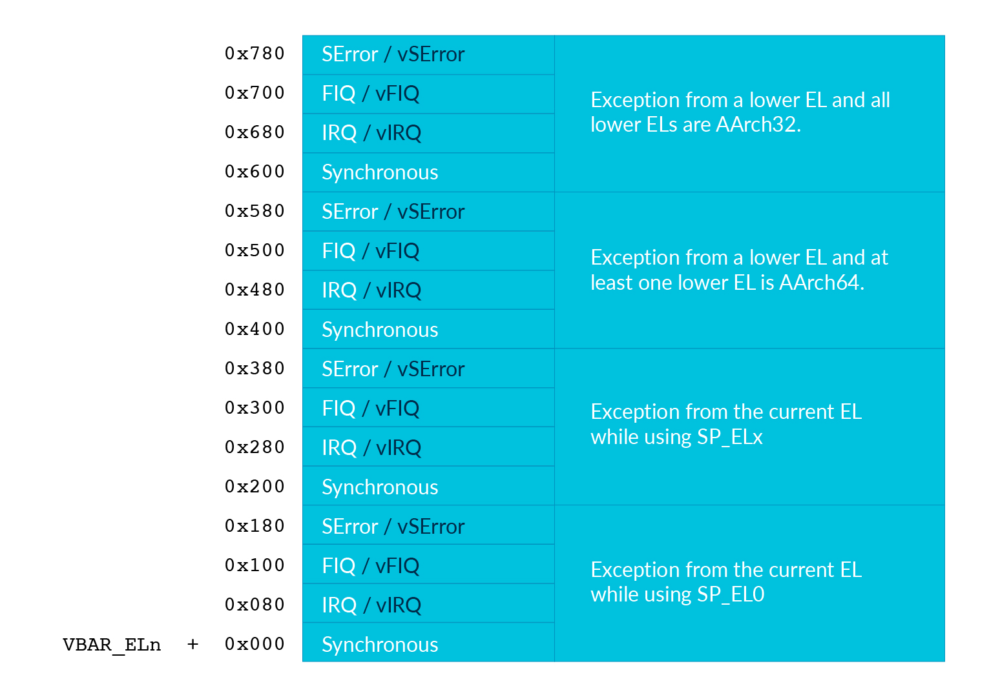

Lab 3 : Exception and Interrupt¶
Introduction¶
Exception and interrupt are important mechanisms in kernel. Interrupt free kernel from polling peripherals. Exception enables kernel to handle sporadic special events.
Goals of this lab¶
Understand how exception works.
Understand how interrupt works.
Implement the timer interrupt handler.
Understand how to switch between exception levels.
ARM Exception¶
Exception level¶
ARMv8-A CPU has 4 exception levels (EL) for different privilege operations. rpi3’s CPUs run in EL2 after booted by GPU by default.
In different exception levels, the stack pointer is alias of SP_ELx.
You can also use the same stack for all exception level by setting SPSel, then stack pointer is alias of SP_EL0 for all levels, but it’s not recommended.
Exception vector table¶
When CPU takes an exception, it needs to know how to handle it. It gets the address of the vector table from VBAR_ELx. Then it looks up the vector table to take the corresponding action.
Exception table example
// load exception_table to VBAR_EL2
ldr x0, =exception_table
msr VBAR_EL2, x0
// Simple vector table
.align 11 // vector table should be aligned to 0x800
.global exception_table
exception_table:
b exception_handler // branch to a handler function.
.align 7 // entry size is 0x80, .align will pad 0
b exception_handler
.align 7
b exception_handler
.align 7
b exception_handler
.align 7
b exception_handler
.align 7
b exception_handler
.align 7
b exception_handler
.align 7
b exception_handler
.align 7
b exception_handler
.align 7
b exception_handler
.align 7
b exception_handler
.align 7
b exception_handler
.align 7
b exception_handler
.align 7
b exception_handler
.align 7
b exception_handler
.align 7
b exception_handler
.align 7
Your first exception¶
After initializing the exception vector table for EL2, you can issue svc #NUM instruction (supervisor/system call) to take exception.
In your exception_handler you can print the content of ELR_EL2 and ESR_EL2 and enter an infinite loop to check the return address and cause of the exception.
required 1-0 Set up the exception vector table.
required 1-1 Implement the exception handler for Synchronous Exceptions from the currentEL while using SP_ELx (offset 0x200-0x280 in the vector table).
required 1-2 Add an exc command to the shell. It issues svc #1 and then your exception handler should print the return address, EC field, and ISS field.
question 1 Change svc instruction to brk (breakpoint) instruction. See the difference in ELR_EL2(return address). Explain why there is a difference.
ARM exception mechanism¶
When CPU takes exception because of svc or other causes.
There are a lot of things happen.
Below are scripted and rephrased from ARMv8-A manual.
on excpetion taken¶
The current processor state is saved in SPSR_ELx. (x is the number of target Exception Level)
The exception return address is saved in ELR_ELx.
Interrupt is disabled. (PSTATE.{D,A,I,F} are set to 1).
If the exception is a synchronous exception or an SError interrupt, ESR_ELx saves the syndrome of that exception.
Exception level becomes target Exception Level and the program counter is set to the corresponding exception vector address.
exception return¶
Issue eret instruction makes CPU return from the exception context.
The program counter is restored from ELR_ELx.
PSTATE is restored from SPSR_ELx.
Context saving¶
Registers’ content might change in the interrupt service routine (ISR). After returning from the exception, the context is corrupted if you dont’t save it correctly. In general, you should push general registers(x0-x30) to the stack before executing the entire ISR and pop them back before returning from the exception.
required 2 Remove the infinite loop in exception_handler function and add eret at the end of ISRs.
Observe the difference between saving and not saving general registers.
question 2 Do you need to save floating point SIMD registers in ISRs? Why or why not.
Pi3’s interrupt¶
Background¶
ARMv8-A’s CPU treats interrupt as an asynchronous exception. Interrupts are categorized into IRQ and FIQ. Only IRQ is used for the labs.
The interrupt controller routing has two levels. The first level routes core related interrupts such as core timer interrupts and core un-related interrupts such as interrupts from GPU. Then it sends the IRQ to ARM CPU. The details could be found in
https://github.com/raspberrypi/documentation/blob/master/hardware/raspberrypi/bcm2836/QA7_rev3.4.pdf
The second level routes interrupts from peripherals such as UART and system timer, they are aggregated and send to first level interrupt controller as GPU IRQ. The details could be found in
https://cs140e.sergio.bz/docs/BCM2837-ARM-Peripherals.pdf (page 109)
To use interrupt in EL2, first you need to set HCR_EL2.IMO and clear PSTATE.DAIF to enable CPU to accept interrupt. Besides, peripherals’ IRQ is usually configure independently. You might need to check peripherals’ document to know how to configure them. After ISR, some peripherals need CPU to mandatory clear the interrupt signal.
question 3 What will happen if you don’t clear peripherals’ interrupt signal?
Timer interrupt¶
Timer is the easiest way to test interrupt mechanism.
Rpi3 has 4 kinds of timers. We provide a list about how to configure them and some properties of them.
system timer¶
Not emulated by qemu.
4 different comparing channels, no. 1, 3 are for ARM interrupt.
In BCM2837 datasheet page 172.
#define SYSTEM_TIMER_COMPARE1 0x3f003010
#define SYSTEM_TIMER_CLO 0x3f003004
#define SYSTEM_TIMER_CS 0x3f003000
#define IRQ_ENABLE0 0x3f00b210
void sys_timer_init(){
unsigned int t;
get(SYSTEM_TIMER_CLO, t);
set(SYSTEM_TIMER_COMPARE1, t + 2500000);
set(IRQ_ENABLE0, 1 << 1);
}
void sys_timer_handler(){
unsigned int t;
get(SYSTEM_TIMER_CLO, t);
set(SYSTEM_TIMER_COMPARE1, t + 2500000);
set(SYSTEM_TIMER_CS, 0xf);
}
arm side timer¶
Not emulated by qemu.
In BCM2837 datasheet page 196.
#define ARM_TIMER_LOAD 0x3f00b400
#define ARM_TIMER_CONTROL 0x3f00b408
#define ARM_TIMER_IRQ_CLR 0x3f00b40c
#define IRQ_ENABLE2 0x3f00b218
void arm_timer_init(){
set(ARM_TIMER_CONTROL, (1 << 7) | (1 << 5) | (1 << 1));
set(ARM_TIMER_LOAD, 500000);
set(IRQ_ENABLE2, 1);
}
void arm_timer_hanler(){
set(ARM_TIMER_IRQ_CLR, 1);
}
arm local timer¶
Emulated by qemu.
Could be routed to different cores.
Reload value is 27 bit long.
QA7_rev3.4 data sheet page 17.
#define LOCAL_TIMER_CONTROL_REG 0x40000034
void local_timer_init(){
unsigned int flag = 0x30000000 // enable timer and interrupt.
unsigned int reload = 25000000;
set(LOCAL_TIMER_CONTROL, flag | reload);
}
#define LOCAL_TIMER_IRQ_CLR 0x40000038
void local_timer_handler(){
set(LOCAL_TIMER_IRQ_CLR, 0xc0000000); // clear interrupt and reload.
}
arm core timer¶
Emulated by qemu.
4 CPU cores is configured independently.
But the timer clock source is the same.
Control by arm registers.
CNTPCT_EL0: Current timer count.
CNTP_CVAL_EL0: If CNTPCT_EL0 >= CNTP_CVAL_EL0 raise interrupt.
CNTP_TVAL_EL0: Writing a time period, it automatically sets CNTP_CVAL_EL0 according to CNTPCT_EL0.
In QA7_rev3.4 data sheet page 9.
#define CORE0_TIMER_IRQ_CTRL 0x40000040
#define EXPIRE_PERIOD 0xfffffff
core_timer_enable:
mov x0, 1
msr cntp_ctl_el0, x0 // enable timer
mov x0, EXPIRE_PERIOD
msr cntp_tval_el0 // set expired time
mov x0, 2
ldr x1, =CORE0_TIMER_IRQ_CTRL
str x0, [x1] // enable timer interrupt
core_timer_handler:
mov x0, EXPIRE_PERIOD
msr cntp_tval_el0
required 3-1 Implement IRQ handler for IRQ Exception from the current EL while using SP_ELx. (offset 0x280-0x300 in the vector table)
required 3-2 Implement the arm core timer handler. Add irq command to the shell to enable timer.
elective 1 Pick another timer and implement its handler.
UART interrupt¶
UART can be handled by either polling until UART is available or using interrupt. Because we don’t know when UART is available, it’ll waste a lot of CPU time on it. Let UART interrupts CPU when it’s available, then transmit or receive data in ISR is more efficient.
elective 2 Implement ISR for either mini UART or PL011 UART.
Deferred interrupt handle¶
When CPU takes exceptions, interrupt is disabled immediately. Then a critical interrupt might be blocked by a non-critical interrupt. Hence, we need to enable interrupt in the halfway of ISR. For the top half of ISR, it should clear the interrupt, move data (possibly using DMA) and schedule the bottom half ISR. For the bottom half of ISR, it only disable interrupt in critical section and finishing the remaining jobs.
By enabling interrupt in bottom half of ISR, you’ll get a better response time and give higher priority to critical interrupt.
elective 3 Use a long delay to simulate bottom half of ISR. Compare the difference between enabling and not enabling interrupt after top half of ISR.
Exception Level Switch¶
As you saw on the picture describing exception levels. EL0 is designed for application and EL1 is for kernel. You have already practiced how exception and interrupt work in EL2. In the next lab, your kernel will run in EL1 interacts with tasks runs in EL0. Hence, you should know how to switch between exception levels.
From EL2 to EL1¶
In the previous exercise, your program ran in EL2.
Now, you’re moving onto EL1.
Remember that the PSTATE and return address would be kept in SPSR_EL2 and ELR_EL2 when exception is taken
and restore when you execute eret?
You can manually write SPSR_EL2 and ELR_EL2 to simulate that you already take exception from EL1 to EL2.
After executing eret, you’ll switch back to EL1 and your program counter is restored from ELR_EL2.
Note
You could set stack pointer by setting
msr SP_EL1, x0beforeeretor bymov sp, x0aftereretYou should also write HCR_EL2.RW to 1 because you’re running 64 bit kernel.
Do not set HCR_EL2.IMO if you want your interrupt directly goto kernel in EL1 not the hypervisor run in EL2.
Warning
Take care about VBAR_EL1, VBAR_EL2 and exception table if you don’t change from EL2 to EL1 in the early initialization stage.
Note
The EL1 exception handler should be different from EL2 exception handler such as you should read ELR_EL1 for return address instead of ELR_EL2.
required 4-1 Return from EL2 to EL1 and set the corresponding handlers.
EL1 to EL0¶
You’ve known how to return from EL2 to EL1. From EL1 to EL0, it’s almost the same. However, you need to notice that, exceptions include interrupts in EL0 are handled by EL1’s exception handler. Hence, you need to set up VBAR_EL1. Also, the exceptions are handled by higher EL so you need to set up the exception handler in vector table with offset 0x400-0x600.
Note
You should also carefully set stack pointer for EL0.
required 4-2 Return from EL1 to EL0 and run shell in EL0.
Basic System Call¶
You might notice that when you execute irq command in the shell, CPU takes an exception.
That because you use msr to write core timer register which is a privilege operation.
To enable the timer, now you have to rely on the kernel in EL1.
You can use svc to perform a system call.
In EL1’s synchronous exception handler, you check ESR_EL1 to identify the exception is a system call then enable the timer.
required 4-3 Reimplement irq command by system call.